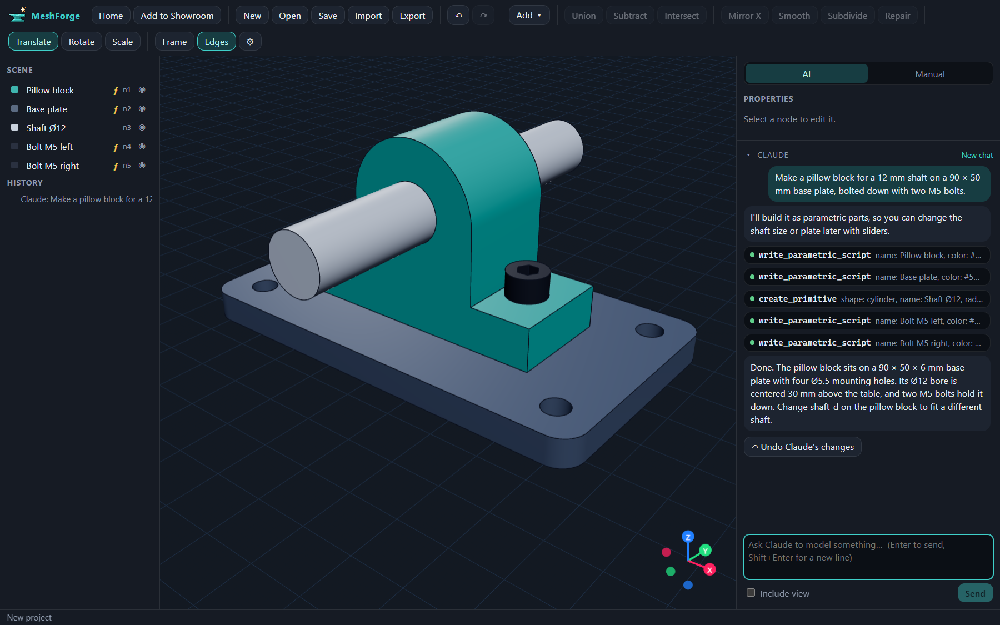
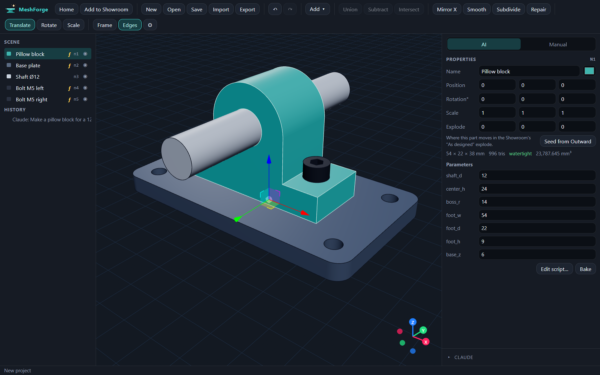
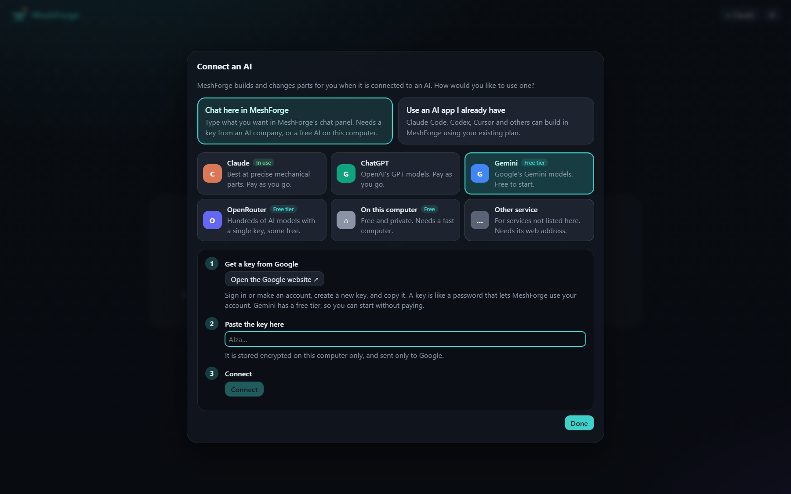
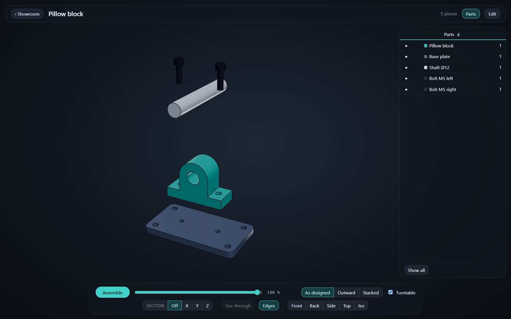

Describe a part.
Watch it appear.
MeshForge is a 3D modeling app where an AI builds and edits your parts while you watch. Every dimension stays editable, and the result exports straight to your printer or CAD tool.
Works with Claude, ChatGPT, Gemini, free local models, and AI apps you already use.

From words to a printable part
No modeling experience needed to start, and no limits once you know what you're doing.
Connect an AI
Paste a key from Claude, ChatGPT or Gemini, run a free model on your own computer, or let MeshForge set up Claude Code, Claude Desktop, Codex, Cursor or VS Code for you.
Describe what you need
“A pillow block for a 12 mm shaft on a 90 × 50 mm plate.” The AI builds it with MeshForge's modeling tools, and each request is one undo step.
Tweak and export
Edit any dimension by number, sketch by hand, or just ask for changes. Export STEP for CAD, or STL, 3MF, OBJ, GLB and PLY.
Parts you can still change
The AI writes precise parts as small parametric scripts with named dimensions. Type a new shaft diameter or plate size and the part rebuilds instantly. No re-prompting, no starting over.
- Booleans, mirrors, arrays, extrusions, rounded profiles and hole patterns
- Smooth, subdivide, decimate, remesh and repair for organic shapes and scans
- Watertight output that's ready for slicing

Use the AI you already have
Pick the AI you like and switch whenever you want. Your conversation is saved with each project, so you can pick up where you left off, even with a different AI.

Show off the assembly
Put finished work in the Showroom: a full-screen viewer with exploded views, section planes, a parts list and a turntable. Set how far each part flies out, so the explode looks the way you designed it.
- Explode outward, in stacked layers, or as designed
- Section along X, Y or Z, with see-through housings
- Parts list with materials, specs and notes

Everything else you'd expect
Manual mode
Sketch lines, arcs, circles and polygons on any plane or face, with typed dimensions and snapping. Extrude or revolve, then join, cut or intersect.
Measure and organise
Measure distances, angles and hole diameters right on the model. Group parts in the scene tree and move them as one.
Safe to experiment
Each AI turn is a single undo step, and “Undo Claude's changes” takes the whole turn back. Projects save themselves after every change.
Import anything
Open STL, OBJ, GLB, glTF, PLY and 3MF. Broken meshes are repaired automatically.
Private
No telemetry. Keys are encrypted on your computer, and your prompts go only to the AI you picked.
Updates included
Every 1.x update installs in the background. You buy once and keep the version you paid for.
One price. No subscription.
Try everything free for 14 days. After that, your projects still open, view and export, and a license unlocks editing.
MeshForge 1.x
One-time payment. Local VAT may be added at checkout.
- All 1.x updates
- Use on up to 3 of your computers
- Personal and commercial work
- 14-day money-back guarantee
AI usage is billed by the AI company you connect, or free with Gemini's free tier or a local model. Payment is handled by Lemon Squeezy.
Questions
Do I need to pay for an AI as well?
Not necessarily. Gemini has a free tier, OpenRouter has free models, and Ollama or LM Studio run models on your own computer for free. If you already pay for Claude or ChatGPT, MeshForge can use that through Claude Code, Claude Desktop or Codex. With an API key you pay the AI company directly for what you use.
What happens when the trial ends?
MeshForge becomes read-only. You can still open, view and export every project, so your work is never locked away. Enter a license key in Settings to edit again.
Are updates included?
Yes, every 1.x update, installed automatically in the background. A future 2.0 would be an optional paid upgrade, and your 1.x license keeps working forever.
Is my work sent anywhere?
MeshForge has no telemetry and never sends your projects to us. When you chat, your message and a short description of the scene go to the AI you picked. The app also contacts Lemon Squeezy to check your license and GitHub to check for updates. Details are in the privacy policy.
Windows says “Windows protected your PC”. Is it safe?
That's Windows SmartScreen. It warns about newer apps that aren't code-signed yet, and signing is on the way. Click More info, then Run anyway.
Can I move my license to a new computer?
Yes. Click Deactivate in Settings on the old computer, then enter the key on the new one. A license works on up to 3 computers at once.
Does it export STEP?
Yes. Parts you sketch and extrude or revolve in Manual mode, and joins and cuts made from them, export as exact solids with true flat, cylindrical and curved faces that SolidWorks, Fusion, FreeCAD and other CAD programs open as real geometry. Other parts (imported meshes, AI-made shapes) are written as faceted solids. STL, 3MF, OBJ, GLB and PLY are there too.
Mac or Linux?
Windows 10 and 11 (64-bit) only for now.
What if it isn't for me?
Email within 14 days of buying and you'll get a full refund. See the refund policy.